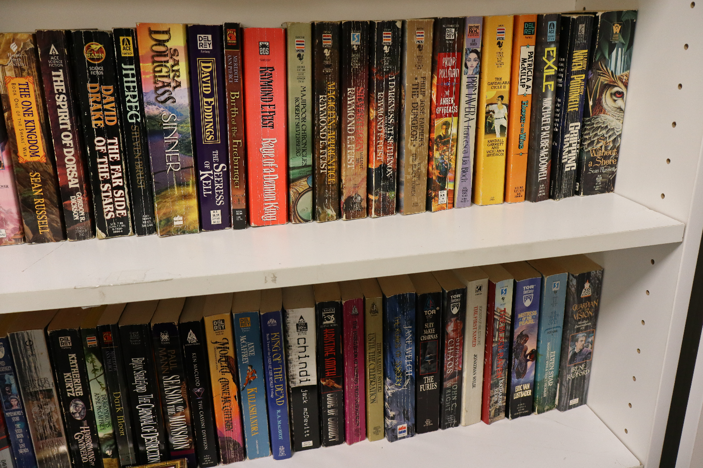
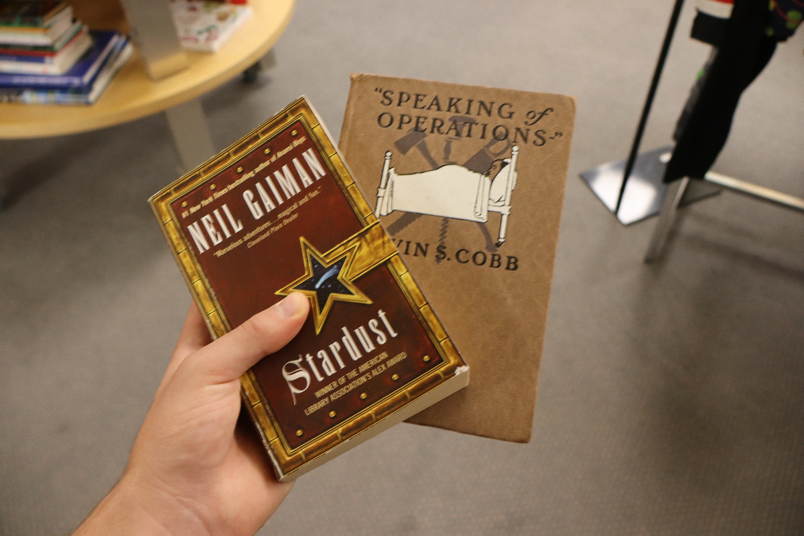

I just finished rereading my favourite book, "Show Your Work" by Austin Kleon. Every time I read it, it fills me with creative motivation. It reminds me that what I should be doing is actually quite simple: do good work and talk about it online.
This book is filled with illustrations and snippets of blackout poetry. Almost every other page has a piece of art for you to enjoy. When I finished reading it, I felt inspired and took a trip to the nearest thrift store to get my hands on a piece of text I could black out to make poetry.
I looked through most of the paperback books on their shelves to find the ones with the largest font size. I figured it would be easier to get started with fewer words on the page.

I found these two books, one from 1914 and I'm excited to give this a shot.
